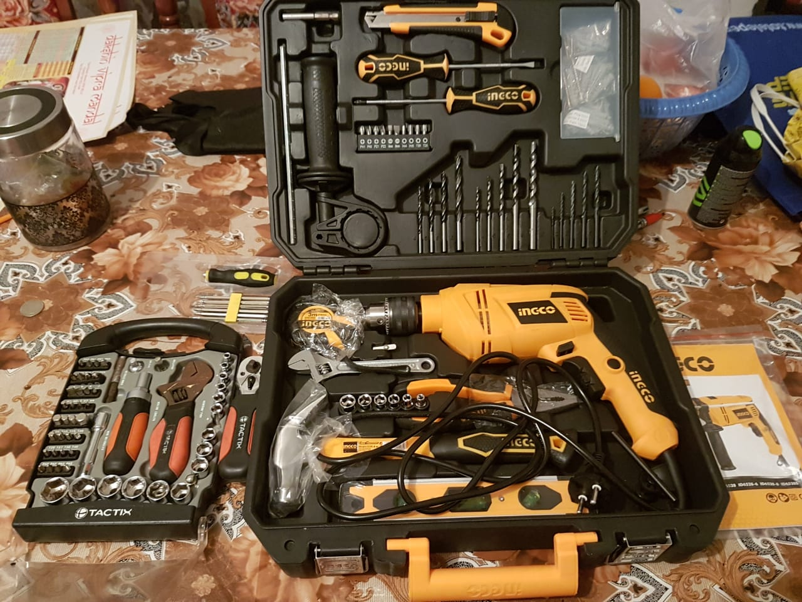
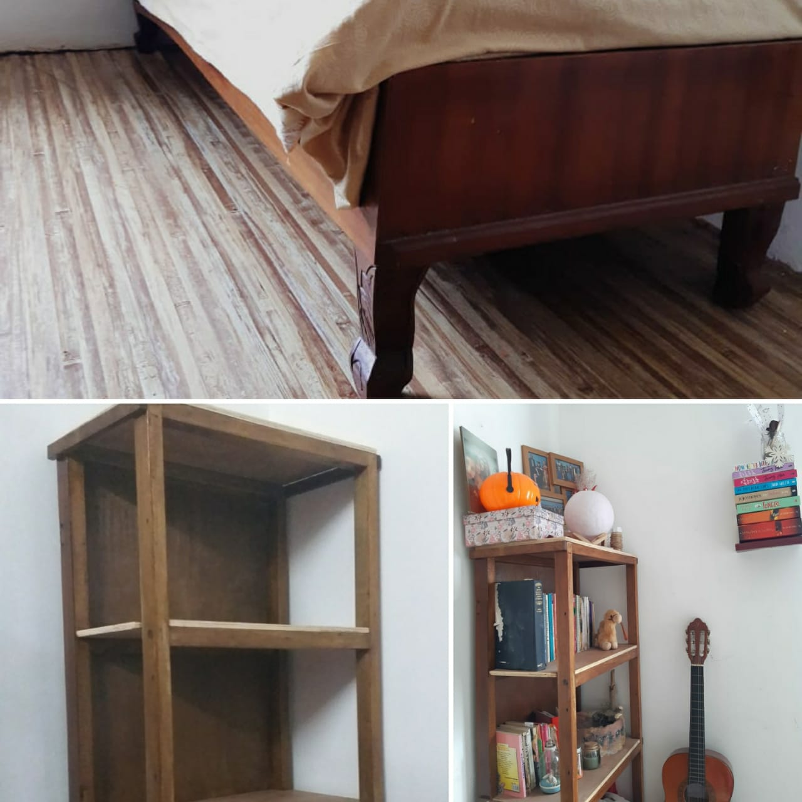
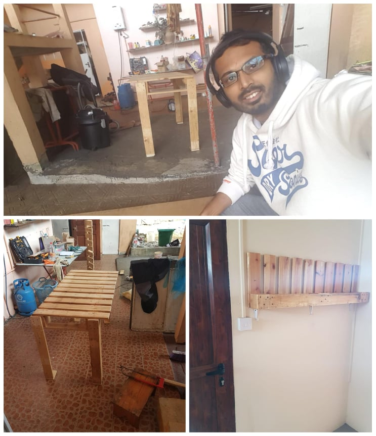
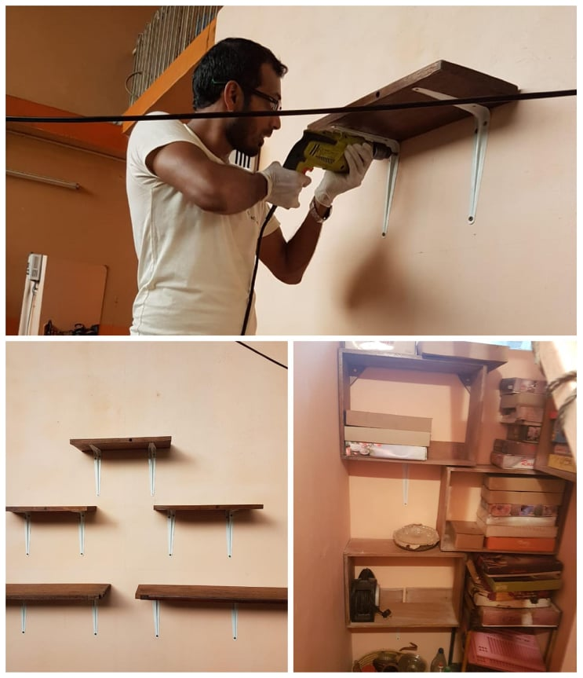
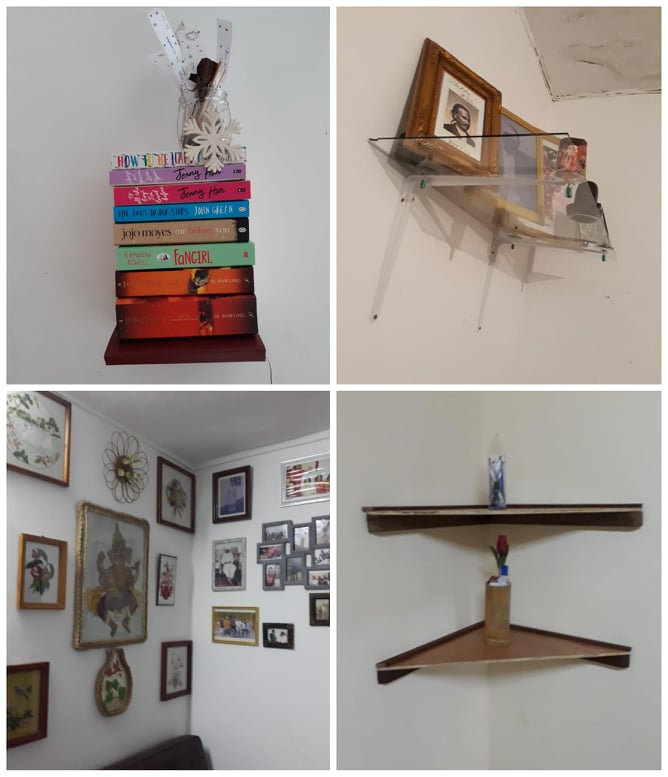
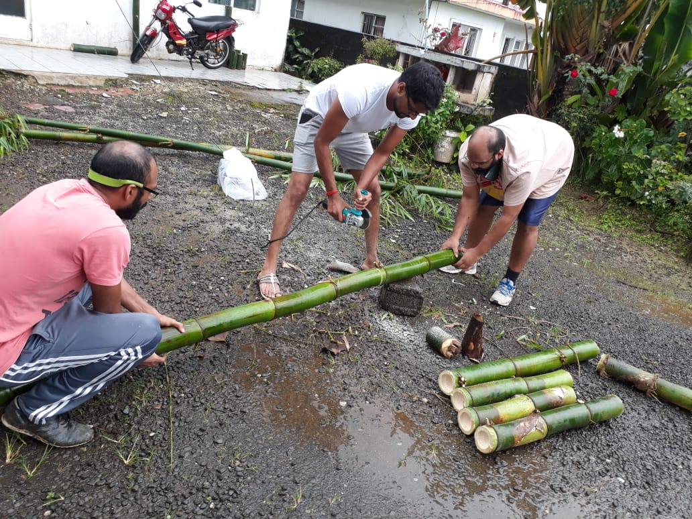
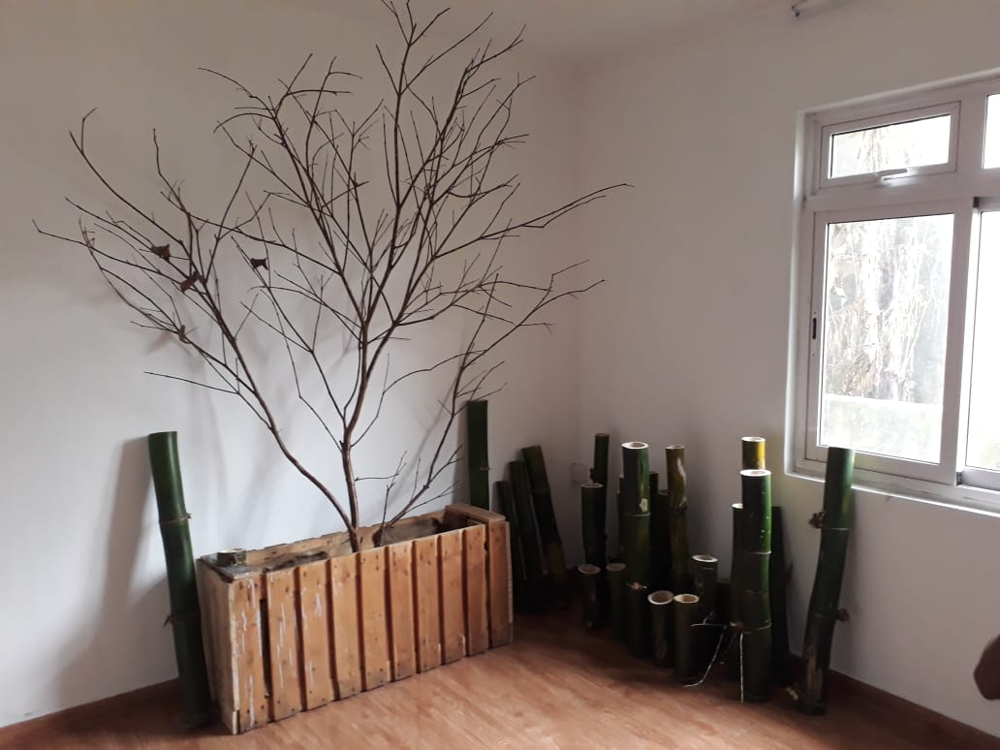

I wanted to try woodwork. We had so many scrap wooden furniture around. Just with this thought and casual talking with my close ones I was surprised by being gifted with quite some tools for Christmas.

The feeling was just like a little kid having received his long wanted toys. I was going to try to use those tools for the first time. Believe me trying to understand and using those tools are fun. The Basic tools I use for the wood work are a Jigsaw, a Drill, Hammer, Measurement tape, Screw drivers, Level ruler and Pincers. If I need other tools I just improvise depending I am going to prepare.
The first thing I do is to see what raw material I have in hand and then think of different options of how to use them. I use as far as possible all scrap materials which are in good condition. I will then picture the final product – this is a challenging part because the restriction is the raw material I have in hand and will buy only a minimum of the fittings required based on an initial assessment.
Some of the things I made out of scrap are as follows:
I started by dismantling the cupboard and saw that the shelves frames and cabinet floors could be re-used. I then polished the wood and painted them with “Polibois”. This protects the wood against humidity. I then polish it again and then varnish it (I prefer using colorless varnish) which keeps the color in the raw state and gives the final product a rustic look. This part applies for all the wood works I use from scrap. 
The pellets were still in good condition. Yet I had to paint it with “Polibois” and varnish it. 
These were ancient wooden furniture of my grandparents which I dismantled. I noticed that the wood used at that time were still in good condition could last for another generation if treated well. 
These are the result of other unused materials we had at home. 
Now we are trying to prepare some decorative stands with Bamboos available in the village.  
To conclude – see what you can use from the scraps. Some might turn out to be very useful and beautiful. I urge you to give it a try and enjoy the satisfaction of the final product as I do.
Hello
I'm Manish Sonahee
I am a certified chartered accountant by profession and I have a passion for trying new things.
You never know what you can do until you try, with a bit of patience and hard work